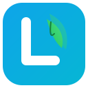

API 配置
配置用于翻译的 AI 服务节点，支持多节点自动故障转移
速率限制轮询
当节点达到请求频率限制时自动切换到下一个可用节点
API 节点
拖拽调整优先级，优先使用排在前面的节点
学习偏好
设置你的语言学习目标和难度
选择要处理的网页语言类型
A1
A2
B1
B2
C1
C2
选择 B1 等级，将显示该等级及以上难度的词汇
配置学习语言的发音声音和语速
行为设置
控制插件的自动化行为
自动处理新页面
打开新页面时自动进行词汇替换
显示音标
在悬停提示中显示学习语言的音标
选中添加到记忆
选中文本时显示"添加到需记忆"按钮
设置词汇缓存的最大数量，更大的缓存可减少 API 调用
选择翻译词汇在页面上的显示方式
主题样式
自定义单词替换和卡片的视觉样式
选择你喜欢的界面外观
选择内置主题或创建自定义主题
word
A1
/wɜːd/
原文: 单词
n.
- 单词，词语
站点规则
控制插件在哪些网站上运行
选择插件的运行范围
这些站点将不会进行任何处理，每行一个（支持部分匹配，如 "github" 匹配所有包含 github 的域名）
词汇管理
管理已学会和需记忆的词汇，查看学习进度
0
累计接触
0
今日接触
0
已学会
0
需记忆
已缓存: 0
命中率: 0%
更多
关于与数据管理

Lingrove
智能替换网页词汇，创造沉浸式双语学习环境
基于「可理解性输入」理论，让语言学习融入日常生活
备份或迁移你的学习数据和配置